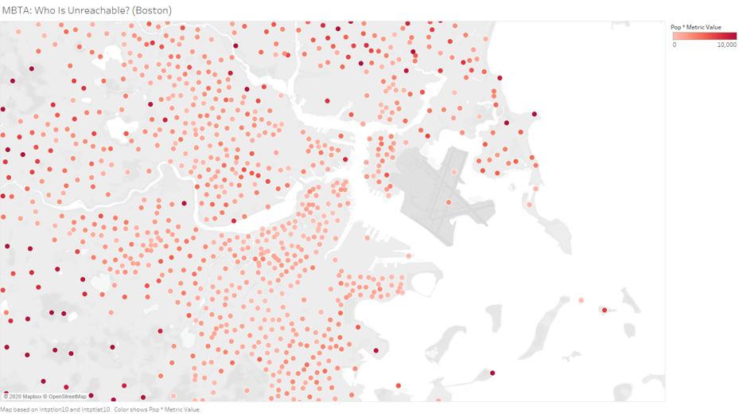

Who
This is a project made during the 11.S188 IAP class. It was a solo project.
What
Sometimes when I commute in Boston I wonder why I have to walk quite far and wait quite long at the train or bus station. So for the project I'd like to explore the "inconvenience" factor for a small subdivision in Massachusetts.
Where
This project was done on MIT campus during the Independent Activities Period, in the cold winter months of Boston.
When
22 January 2020 - 31 January 2020 (10 days)
Why
It's pretty much a proof of concept of what we can potentially do to plan future stations or reflect on how the community can reach public transport.
How
I used the MBTA API, wrote some Python code, and visualized the results using Tableau.